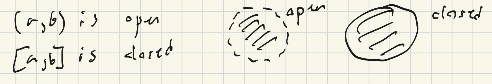

Given \(f:[a,b]\to\mathbb{R}, c\in[a,b]\), we say \(f\) is differentiable at \(c\) if \(\lim_{h\to0}\frac{f(c+h)-f(c)}{h}\) exists.
We denote the limit, if it exists, by \(f'(c)\) or \(\frac{df}{dx}(c)\) (The def of limit given by \(\varepsilon-\delta\) as in last view)
\(f:[a,b]\to\mathbb{R}\) continuous and \(f\) differentiable at every point \(c\in(a,b)\)
That means there exists \(c\in(a,b)\) s.t. \(f'(c)=\frac{f(b)-f(a)}{b-a}\)
\(f:[a,b]\to\mathbb{R}\) continuous and \(f\) differentiable at every point in \(c\in(a,b)\). Supppose \(f(b)=0=f(a)\). Then there exists \(c\in(a,b)\) s.t. \(f'(c)=0\)
We will first prove Rolle's theorem and use that to prove MVT:
Rmk: If \(f\) is constant then we are done and and \(f'(c)=0\)
Otherwise, either \(\exists{x_0}\in(a,b)\) s.t. \(f(x_0)>0\) or \(\exists{x_0}\in(a,b)\) s.t. \(f(x_0)<{0}\)
In the former case, there exists \(c\in[a,b]\) s.t. \(f(x)\leq{f(c)}\) for all \(x\in[a,b]\). Since \(f(c)\geq{f(x_0)}>0\), we know \(c\in(a,b)\)
Claim: \(f'(c)=0\)
Pf: We know \[f'(c)=\lim_{x\to{c}}\frac{f(x)-f(c)}{x-c}\]
Take \(x_n\) with \(\lim{x_n}=c, c<{x}_n<{b}\)
We know \[f'(c)=\lim_{n\to\infty}\frac{f(x_n)-f(c)}{x_n-c}, \text{ where }\frac{f(x_n)-f(c)}{x_n-c}\leq{0}\implies{f'(c)\leq{0}}\]
On the other hand, take \(\{x_n\}^\infty_{n=1}\) with \(\lim{x_n}=c, a<{x}_n<{c}\)
Then \[f'(c)=\lim_{n\to\infty}\frac{f(x_n)-f(c)}{x_n-c}\text{ and }\frac{f(x_n)-f(c)}{x_n-c}\geq{0}\implies{f'(c)\geq{0}}\]
Hence, \(f'(c)=0 \qquad\qquad\square\)
Now we prove MVT:
Given \(f\) , define \(g:[a,b]\to\mathbb{R}\) by
\[g(x)=f(x)-f(a)-\frac{f(b)-f(a)}{b-a}\]
We claim rolle's theorem applies because \(g(a)=0\) and \(g(b)=0\)
By Rolle's theorem, there exists \(c\in(a,b)\) s.t. \[0=g'(c)=\left(f(c)-f(a)-\frac{f(b)-f(a)}{b-a}(x-a)\right)'=f'(c)-\frac{f(b)-f(a)}{b-a}\]
This implies that \[f'(c)=\frac{f(b)-f(a)}{b-a}\]
Def: A sequence in \(\mathbb{R}^n\) is a map: \(\mathbb{N}\to\mathbb{R}^n\)
We denote by \(\{a_k\}_{k=1}^\infty\) or \(\{a^{(k)}\}^\infty_{k=1}\). When using \(\{a^{(k)}\}\) notation, we can denote \(a^{(k)}=\left(a_1^{(k)},...,a_n^{(k)}\right)\)
Given \(\{a^{(k)}\}^{\infty}_{n=1}\subseteq\mathbb{R}^n\), \(a\in\mathbb{R}^n\), we say \[\lim_{k\to\infty}a^{(k)}=a\text{ if for all }\varepsilon>0\text{ there exists }\mathcal{K}\in\mathbb{N}\text{ s.t. }||a^{(k)}-a||<\varepsilon\text{ whenever }k\leq\mathcal{K}\]
Here, \(||\cdot||\) is defined by \(||b||=\sqrt{b\cdot{b}}=\sqrt{\sum_{i=1}^{n}b_i^2}\)
Def \(\{a^{(k)}\}_{n=1}^\infty\) is convergent if \(\exists{a}\in\mathbb{R}^n\) s.t. \(\lim_{k\to\infty}a^{(k)}=a\)
\(\{a^{(k)}\}^\infty_{k=1}\subseteq{\mathbb{R}^n}, a\in\mathbb{R}^n\). Then \(\lim{a^{(k)}}=n\iff\lim{a_i^{(k)}=a_i}\) for all \(i=1,2,..,n\)
Pf \((\impliedby)\): Let \(\varepsilon>0\). Since \(\lim{a_i^{(k)}}=a_i\) for every \(i=1,..,k\) there exists \(\mathcal{K}_i\in\mathbb{N}\) s.t.
\[|a_i^{(k)}-a_i|<\frac{\varepsilon}{\sqrt{n}},\text{ whenever }k\geq{\mathcal{K_i}}\]
Let \(\mathcal{K}=\max\{\mathcal{K}_1,...,\mathcal{K}_n\}\)
Then \[||a^{(k)}-a||=\left(\sum_{i=1}^n|a^{(k)}-a_i|^2\right)^{1/2}<\left(\sum{\left(\frac{\varepsilon}{\sqrt{n}}\right)^2}\right)^{1/2}=\varepsilon\implies\lim_{k\to\infty}a^{(k)}=a\]
Pf \((\implies)\): Exercise
Note that some things from \(\mathbb{R}\) do not generalize (can't talk about increasing sequence), but two important results still hold:
\[S\subseteq\mathbb{R}^n\text{ is bounded if there exists }c>0\text{ s.t. }||x||<{c}\text{ for all }s\in{S}\]
If \(\{a^{(k)}\}^\infty_{k=1}\subseteq{\mathbb{R}^n}\) is convergent, then it is bounded.
Pf: We know that if \(\{a^{(k)}\}_{k=1}^\infty\) is convergent then for all \(i\), there exists \(c_i>0\) s.t. \(|a_i^{(k)}|\leq{c_i}\) for all \(k\in\mathbb{N}\)
This means that \[\|a^{(k)}\|=\left(\sum_{i=1}^n(a_i)^2\right)^{1/2}\leq\left(\sum_{i=1}^n(c_i)^2\right)^{1/2}=c\qquad\square\]
Sketch of pf: We prove by induction on \(n\). The base case was proven last week. Assume the result up to dimension \(n-1\).
Let \(\{a^{k}\}_{k=1}^\infty\subseteq{\mathbb{R}^n}\). Write \(a^{(k)}=(a^{(k)}_1,..,a_{n-1}^{(k)},a_n^{(k)}=(a^{1(k)},a_{n}^{(k)})\), where \((a^{1k})=(a_1^{(k)},...,a_{n-1}^{(k)})\)
By induction, there exists a subsequence \(\{a^{k_j}\}\) of \(\{a^{k}\}\) s.t. \(\lim_{j\to\infty}a^{(k_j)}\) exists.
By BW in \(\mathbb{R}\), there exists a subsequence \(\{a_n^{(k_{j_\ell})}\}^\infty_{\ell=1} \text{ of }\{a_n^{(k_j)}\}^\infty_{j=1}\) s.t. \(\lim_{\ell\to\infty}a_n^{(k_{j\ell})}\) exists.
THe end is proving \(\{a^{(k_{j\ell})}\}^\infty_{\ell=1}\subset\mathbb{R}^n\) is convergent and that is left as an exercise.
We should remember the following notation:
In \(\mathbb{R}^n\), an open set is something akin to the circle on the left and a closed set is something akin to the circle in the right.
For \(x\in\mathbb{R}^n,\rho>0\), define \(B_\rho(x)=\{y\in\mathbb{R}^n:||x-y||<\rho\}\)
\(U\subseteq{\mathbb{R}^n}\) is open if for all \(x\in{U}\) there exists some \(\rho>0\) s.t. \(B_\rho(x)\subseteq{U}\)
\(A\subseteq{\mathbb{R}^n}\). We say \(b\in\mathbb{R}^n\) is a limit point of \(A\) if there exists \(\{a^{(k)}\}^\infty_{k=1}\subseteq\mathbb{R}^n\), \(a^{(k)}\in{A}\) s.t. \(b=\lim_{k\to\infty}a^{(k)}\)
Rmk: \(A\subseteq\{\text{limit points of }A\}\)
\(K\subseteq\mathbb{R}^n\) is closed if it contains all its limit points.
Note that a set can be open AND closed or neither
\[\text{If }\{u_\alpha\}_{\alpha\in\Gamma}\text{ is a collection of open sets in }\mathbb{R}^n\text{ then }\bigcup_{\alpha\in\Gamma}u_\alpha\text{ is open. }\]
\[\text{If }\{k_\alpha\}_{\alpha\in\Gamma}\text{ is a collection of closed sets in }\mathbb{R}^n\text{ then }\bigcap_{\alpha\in\Gamma}k_\alpha\text{ is closed. }\]
Pf: \(x\in\bigcup_{\alpha\in\Gamma}u_\alpha\implies\text{ there exists }\alpha_0\in\Gamma\) s.t. \(x\in{u}_{\alpha0}\)
\(\implies\exists\rho>0\text{ s.t. }B_\rho(x)\subseteq{u_{\alpha_0}}\)
\(\implies\exists\rho>0\text{ s.t. }B_\rho(x)\subseteq{\bigcup_{\alpha\in\Gamma}}u_\alpha\qquad\square\)
We should attempt a contradiction for the other proof (exercise)
pf: \((\implies): U\subseteq\mathbb{R}^n\) open. Let \(z\in\mathbb{R}^n\) be a limit point of \(\mathbb{R}^n\backslash{U}\).
We WTS \(z\notin{U}.\)
If \(z\in{U}\), there exists \(\rho>0\) s.t. \(B_\rho(z)\subseteq{U}. \)
On the other hand, since \(z\) is a limit point of \(\mathbb{R}^n\backslash{U}\) then there exists \(y\in\mathbb{R}^n\backslash{U}\) s.t. \(\|y-z\|<\rho\). Hence \(y\in\mathbb{R}^n\backslash{U}\) and \(y\in{B_\rho(z)\subset{U}}\) which is a contradiction!
\((\impliedby)\): We prove the contrapositive
\(U\) is not open
\(\implies\exists{x}\in{U}\) s.t. for all \(\rho>0\) there exists \(y_\rho\in{B_\rho}(x)\) and \(y_\rho\in\mathbb{R}^n\backslash{U}\).
\(\implies\exists{x}\in{U}\) s.t. \(\forall{j}\in\mathbb{N}\exists{y}\in\mathbb{N},y^{(j)}\in{B_j}(x)\) and \(y^{(j)}\in\mathbb{R}^{k}\backslash{U}\)
\(\implies\exists{x\in{U}}\) which is a limit point of \(\mathbb{R}^n\backslash{U}\)
\(\implies\mathbb{R}^n\backslash{U}\) is not closed.